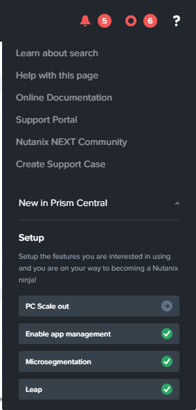

Flow¶
The estimated time to complete this lab is 90 minutes.
Overview¶
Flow is a software-defined networking product tightly integrated into Nutanix AHV and Prism Central. Flow provides rich visualization, automation, and security for VMs running on AHV. Microsegmentation is a component of Flow that simplifies policy management. Using multiple Prism Central categories (logical groups), you can create a powerful distributed firewall that gives administrators an application-centric policy management tool for securing VM traffic. Combining this with Calm allows automated deployment of applications that are secured as they are created.
In this lab you will use Flow to build a microsegmentation policy for a multi-tier web application, isolate groups of VMs from one another, quarantine a problematic VM, and secure VDI users with identity-based microsegmentation.
Lab Setup¶
This lab depends on the availability of a multi-tier Task Manager web application.
Refer to the Deploying Task Manager lab for instructions on importing and launching the completed Task Manager blueprint.
Note
Even if you completed the Calm: Linux Workloads lab, please import the above Task Manager blueprint.
Once you have initiated the Task Manager deployment, you can proceed with the lab below. You do not need to wait for the blueprint deployment to complete to begin this lab.
Enabling Flow¶
Flow is built into Prism Central and requires no additional appliances or consoles to manage. Before you can begin securing your environment with Flow, the service must be enabled.
Note
Flow can only be enabled once per Prism Central instance. Flow will require an additional 1GB of memory for each Prism Central VM, but there is no action required by the user as this occurs automatically. Additionally, the enable process verifies that each connected AHV host has at least 1GB of free RAM. The list of Flow capable AHV clusters is listed in the enable window.
If Microsegmentation displays a green check mark next to it, that means Flow has already been enabled for the Prism Central instance being used. Proceed to Securing An Application.
In Prism Central, click the ? drop down menu and select Microsegmentation.
Enabling Flow will require an additional 1GB of memory for each Prism Central VM, but there is no action required by the user as this occurs automatically.
Click Microsegmentation. The Enable Microsegmentation dialog box is displayed. Select the Enable Microsegmentation check box. Click OK.
Takeaways¶
What are the key things you should know about Nutanix Flow?
- Flow is built into AHV and Prism Central.
- It is an enabling of the feature, nothing new to install.
- No physical changes are required to your networking topology.